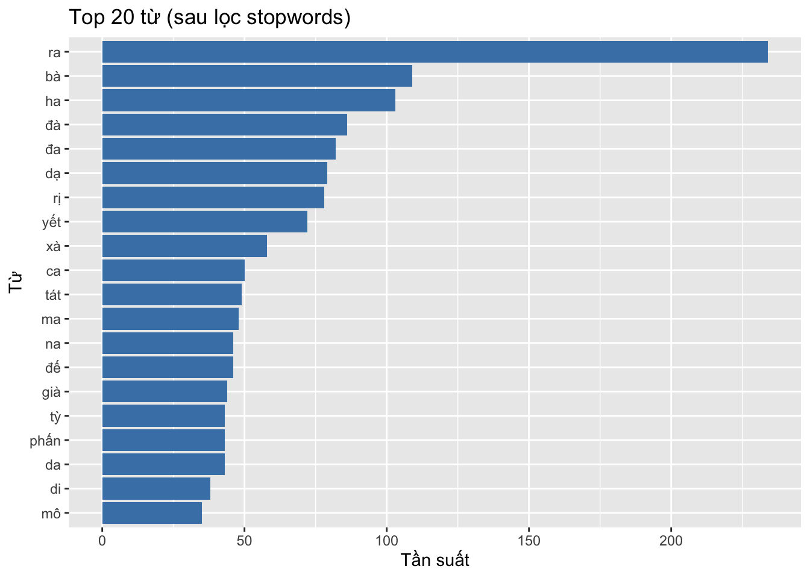

Tự động đọc pdf_books/chu_lang_nghiem_version_2.pdf, trích xuất văn bản (pdf_text hoặc OCR nếu cần), tiền xử lý tiếng Việt và thực hiện một số phân tích cơ bản: tần suất từ, bigrams, wordcloud, và (tuỳ) POS/lemma bằng udpipe.
# Cài/gọi gói (bỏ phần install khi đã cài)if (!requireNamespace("pacman", quietly =TRUE)) install.packages("pacman")pacman::p_load(pdftools, magick, tesseract, stringi, tidyverse, tidytext, ggplot2, wordcloud2, udpipe, readr, quanteda)
The downloaded binary packages are in
/var/folders/_2/mynsp27d76xdxwx3f_dsp0fc0000gn/T//Rtmp9aAMar/downloaded_packages
The downloaded binary packages are in
/var/folders/_2/mynsp27d76xdxwx3f_dsp0fc0000gn/T//Rtmp9aAMar/downloaded_packages
1. Đặt đường dẫn file PDF (chỉnh nếu cần)
pdf_path <-"pdf_books/chu_lang_nghiem_version_2.pdf"if (!file.exists(pdf_path)) stop("Không tìm thấy file PDF tại: ", pdf_path)pdf_path
[1] "pdf_books/chu_lang_nghiem_version_2.pdf"
2. Trích text từ PDF (pdf_text), fallback OCR nếu trống
# 1) Thử trích bằng pdftoolspages_text <- pdftools::pdf_text(pdf_path)# Kiểm tra xem có nội dung chữ hay chỉ ảnhtext_all <-paste(pages_text, collapse ="\n")text_trim <- stringi::stri_trim_both(text_all)if (nchar(text_trim) <30) {message("pdf_text trả về rất ít ký tự — có thể PDF scan (ảnh). Chạy OCR bằng tesseract...")# OCR bằng magick + tesseract: cần cài tesseract binary trước# Nếu muốn giới hạn số trang, có thể dùng pdftools::pdf_convert hoặc image_read img_list <- magick::image_read(pdf_path) ocr_pages <-sapply(img_list, function(img) tesseract::ocr(img, engine = tesseract::tesseract("vie"))) text_all <-paste(ocr_pages, collapse ="\n")} else {message("Đã trích text bằng pdftools.")}# Chuẩn hóa Unicodetext_all <- stringi::stri_trans_nfkc(text_all)# Lưu bản text thô để kiểm trareadr::write_file(text_all, "data/chu_lang_nghiem_raw.txt")
Error in open.connection(file, "wb"): cannot open the connection
cat("Đã lưu text thô vào data/chu_lang_nghiem_raw.txt\n")
Rows: 482
Columns: 1
$ line <chr> "ĐẠO TRÀNG LIÊN HOA", " HÚ", "C", "LĂNG …
# Nếu PDF có nhiều header/footer lặp, cần bổ sung lọc thủ công
4. Stopwords tiếng Việt — nạp file nếu có, ngược lại dùng danh sách cơ bản
stopfile <-"data/vn_stopwords.txt"if (file.exists(stopfile)) { vn_stop <- readr::read_lines(stopfile) %>%str_trim() %>%tolower() %>%unique()message("Đã nạp stopwords từ ", stopfile)} else {message("Không tìm thấy data/vn_stopwords.txt — dùng danh sách stopwords cơ bản (gợi ý cải thiện).") vn_stop <-c("và","là","của","có","cho","với","trong","một","như","được","tâm","ta","con","chú","phật","bồ","từ","người") # mở rộng theo nhu cầu}length(vn_stop)
[1] 18
5. Tokenization & lọc stopwords
tokens <- df_lines %>%mutate(text = line) %>%unnest_tokens(word, text, token ="words") %>%# tidytext tokenization cơ bản (space-based) phù hợp tiếng Việtmutate(word =str_to_lower(word),word =str_replace_all(word, "[0-9\\p{Punct}]+", "")) %>%filter(str_detect(word, "[[:alpha:]]")) %>%filter(nchar(word) >1) %>%# loại ký tự 1 chữ cáifilter(!word %in% vn_stop)tokens %>%count(word, sort =TRUE) %>%slice_head(n =10)
# A tibble: 10 × 2
word n
<chr> <int>
1 ra 234
2 bà 109
3 ha 103
4 đà 86
5 đa 82
6 dạ 79
7 rị 78
8 yết 72
9 xà 58
10 ca 50
6. Tần suất từ & biểu đồ top 20
freq <- tokens %>%count(word, sort =TRUE)top20 <- freq %>%slice_max(n, n =20)top20 %>%ggplot(aes(reorder(word, n), n)) +geom_col(fill ="steelblue") +coord_flip() +labs(x ="Từ", y ="Tần suất", title ="Top 20 từ (sau lọc stopwords)")

7. Wordcloud
wdata <- freq %>%slice_max(n, n =200)# Nếu chạy trong trình duyệt/HTML, wordcloud2 hiển thị tốtif (nrow(wdata) >0) { wordcloud2::wordcloud2(wdata)} else {message("Không có dữ liệu để vẽ wordcloud.")}
# A tibble: 24 × 2
bigram n
<chr> <int>
1 ra ha 52
2 yết ra 51
3 nam mô 32
4 đà dạ 31
5 dạ di 30
6 tỳ đà 21
7 ma ha 20
8 tát bà 20
9 tệ phấn 19
10 đà ra 19
# ℹ 14 more rows
9. (Tuỳ chọn) POS / Lemma với udpipe
# Kiểm tra mô hình udpipe (bạn cần tải mô hình tiếng Việt trước và đặt tại data/vn-ud.udpipe)model_file <-"data/vn-ud.udpipe"if (file.exists(model_file)) { ud <-udpipe_load_model(model_file)# Dùng từng đoạn hoặc toàn bộ ann <-udpipe_annotate(ud, x = df_lines$line) %>%as_tibble() ann %>%count(lemma, sort =TRUE) %>%slice_max(n, n =20)} else {message("Không tìm thấy mô hình udpipe tiếng Việt tại data/vn-ud.udpipe — bỏ qua POS/lemma.")}